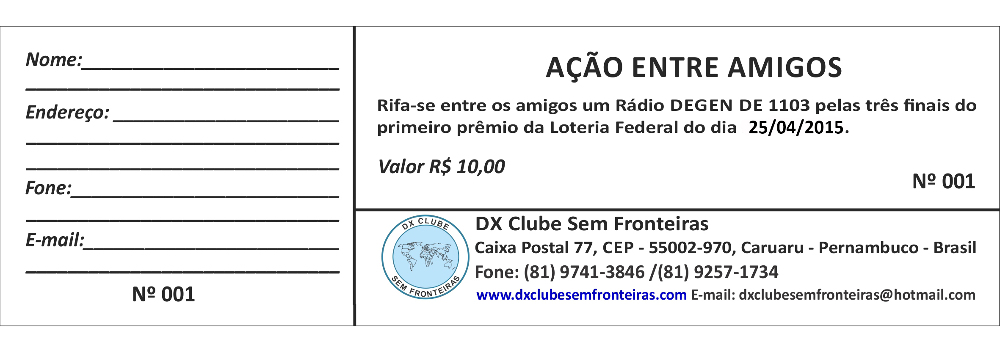

O DX CLUBE SEM FRONTEIRAS INFORMA O RESULTADO OFICIAL DA “AÇÃO ENTRE AMIGOS” (SORTEIO DE UM RÁDIO DEGEN DE 1103)
No sábado dia 23/05/2015 na extração da Loteria Federal de número: 04973 saiu a ganhadora do sorteio. (http://superloto.com.br/resultados/federal/resultado-da-federal-04973-extracao-de-sabado-do-dia-23-de-maio-de-2015)
1º Prêmio: 95.036
BILHETE GANHADOR Nº 036
Nome:
CRISTIANE B. A. ZUCOLOTO
Cidade/UF:
RIO DE JANEIRO – RJ
Dentro de alguns dias a ganhadora estará recebendo o prêmio.
Desde já agradeço a todos que participaram.
Antonio Avelino
Diretor
DX Clube Sem Fronteiras
Caixa Postal, 77
CEP – 55002-970
Caruaru – Pernambuco - Brasil